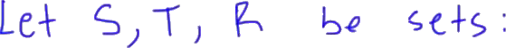

Let let s T and R be sets.

I'm not sure I'm gonna use R but just in case.

Let let s T and R be sets.
I'm not sure I'm gonna use R but just in case.

Now the first operation i wanna talk about is called the union and just called Union.
And we can only union say as Union tee in this way it's kinda issue.

It's not actually a U it's more like a Cup kinda symbol.
I you can have a set called you an adequate little bit different but in senate ation what this is defined as.
This is going to be all of the elements S where acts is an element ass and X is an element up up sorry that backwards X is now a minute ass or X is an element ft writes this is pretty much for gluing these two sets together working all the elements ass and all the elements have tea and making a new set they just contains any element that's in one or the other now remember this is mathematical or.


And we also have a however an opposite idea in a certain sense the intersection now the intersection over Sat I'm internet this s intersection T-shirts colic the Union sign but upside down.
And that's gonna be defined as all of the elements axe where X is an ass and axis NT.

I remember this is or this is and I'm site Meyer coming here is that a temp of right if it's an ass and it's not anti then it's not going to be in the intersection.
Now we also have a difference.
The difference can be denied it a couple different ways.

Sometimes you'll see it s minus T this is the same thing as ass and its kinda forward slash T.

And what this means is this is going to be the set of all about a month better in ass and are not in T writes all the X where X is an ass and axe is not in T.

So basically we're taking the entire set ass and in Peru moving any elements from ass that happened to be in T.


com compliment.

Now this is denoted a couple different ways I could write this with X with a bar.

Sometimes it'll be ass with cannabis little told on top of that.
And sometimes it'll be asked but this little see right depends on what texture using he's all mean s compliment.

And as compliment this is going to be with respect to a particular universe.
Right we talked about the last thirty we talked about universe.
But this is defined to be the universe and then I take out everything that's in ass right.
So in other words this is the setup all X in whatever universe I'm talking about.
So maybe the universe is rational numbers maybe our universe is real numbers.
know whatever it is I'm talking about where axe is specifically not an ass.

Right so any other s will do as long as its you know within that relative universe so couple and now it's real quick now we have some terminology.

I'm not that I can write this s minus T I could write this as ass intersected with T compliment.

We say that if ass intersection T is equal to the null set right.

So in other words if SNT have nothing in common S&T are called disjoint.

Right these are disjoint sets for example the setup all chairs and the set of all bowling balls are disjoint sets.


So let's just say I have my ass is equal to I'll 123 and mighty is equal to 2 4 5.

Okay so given that we can calculate out so many things my ass intersection T members can be all the elements that are in both S&T sets gonna be the set containing only the element to right we see that one and three are not anti.
So too is the only element that simple ass and T now the Union member the union is going to be all elements that are an ass or tea.
So one to 3 for 5.

Right.
This is why I keep same scowling glowing these together right this is the cell all elements there just in one of the SATs.
Say the difference path my nasty that's going to be able to all the elements an ass that are not in T right so in other words one and three.

And the difference T-minus ass that's gonna be all the elements and T that are not an ass.
So for and 55 because they share that to something kinda need to know.


Notice that I have this s minus T Union with T minus ass.

That's going to be the elements one 3 for but that's the same thing as the union of S&T minus the intersection isnt as an.

It's kind of interesting.